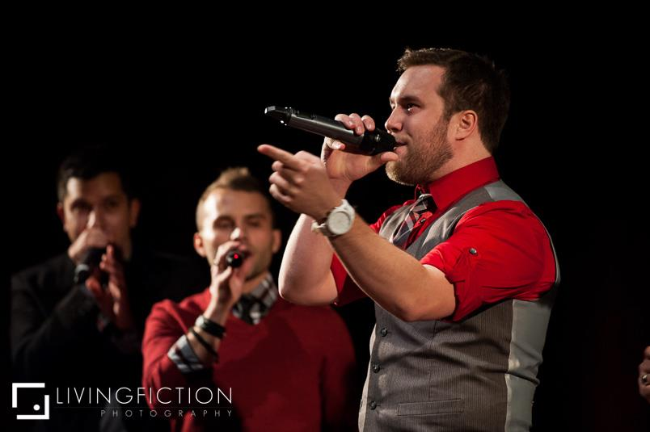
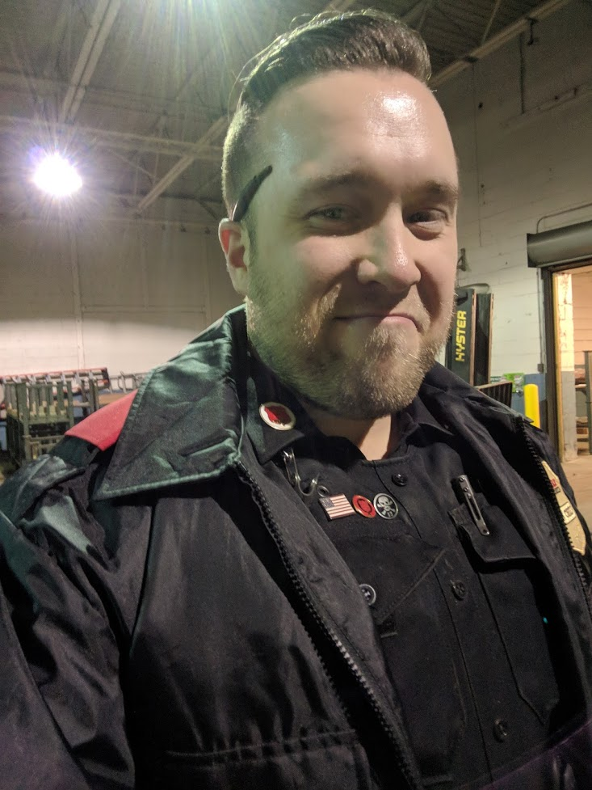

I'm Nathan Hickey and I'm currently a computer science student at the University of St. Thomas. I will be graduating in December of 2020 with a bachelors in computer science. I'm currently working as a intern with Hennepin County doing javascript work on Adobe forms. I'm a returning student, having previously attended college at the University of Minnesota, where I spent 2 years studying for a degree in Electrical Engineering before switching my major to Computer Science. I've always been very busy and involved, and I've had a very interesting journey to get to this point. Between my time at the University of Minnesota and the University of St. Thomas I've actually had 2 very different working adventures in very different fields.

After three and a half years at the University of Minnesota studying computer science, I got an opportunity to travel the country and sing in a professional a cappella group. I wound up leaving school and being a professional singer for six years. I've performed in every US state except Alaska and Hawaii, and have done thousands of shows at venues big and small.
I'm a national a cappella champion, and have gotten to open for Jay Leno, Foreigner, as well as perform with Kenny Loggins and Michael McDonald for a PBS special. I got to sing the national anthem for the All State Sugar Bowl, and at least 5 different state fairs including Minnesota and Texas. Touring and being on the road probably over 250 days a year was both and incredible adventure and a grueling grind. All it all it was an incredible adventure that I'll never forget. I still sing occasionally, but I'm looking forward to graduating and making my money in a more relaxed low key fashion.

While I was still touring and performing, I picked up a part time job working for an armored car company to fill in the occasional gaps in our touring schedule. For the first year and a half or so I only worked a few days a month because we toured so much. However, when I eventually left the group, I switched to working full time until I could figure out how to get back into school. Well, I would up working there for another year and a half or so. During my time there I probably handled over a billion dollars. I always describe the work as a seven year old's dream job. You get a gun and drive around a big truck full of money. The reality however is it was really hard work. The work is fast, high pressure, and physically demanding. Wearing a bulletproof vest in 100 degree heat while pushing a cart with 400 pounds of quarters on it is no joke. You're basically a high risk delivery driver, so you have all the schedule pressure of a delivery route combined with the high risk and needed security of banking. The work wasn't great, but the people were awesome.
I eventually worked my way up to being in charge of one of the elite routes, and I was the guy responsible for all of downtown Minneapolis for over a year. I eventually applied for and was granted a promotion, and became a Crew Chief, which was a filed supervisor which put me in charge of 6 routes and about a dozen employees. Along with that I got building keys and codes, and I was responsible for moving trucks and using the forklift in the morning to get things set up for routes. I would also do route audits, ATM audits, and was responsible for what I always called "putting out fires" if there were any issues with operations. I eventually left my armored car work to return to the University of St. Thomas.